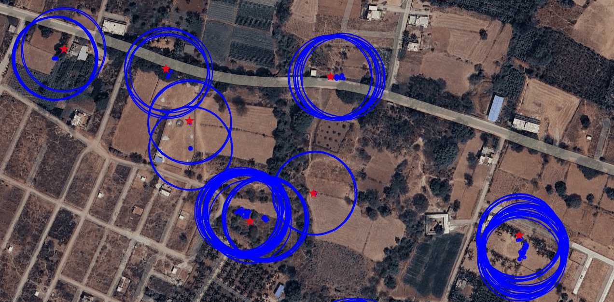
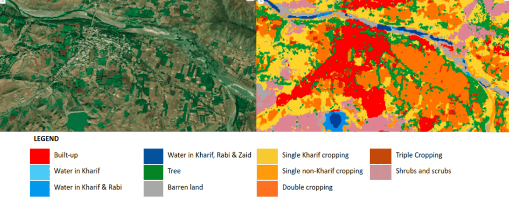
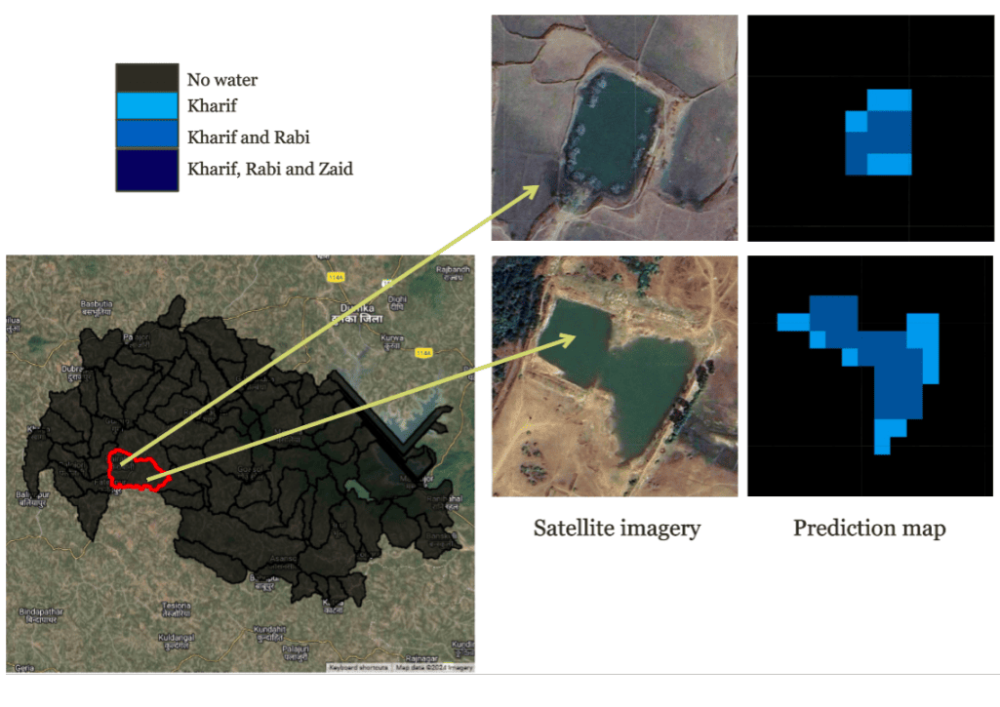
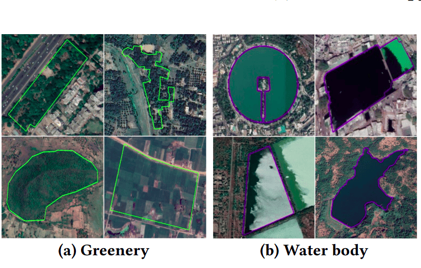
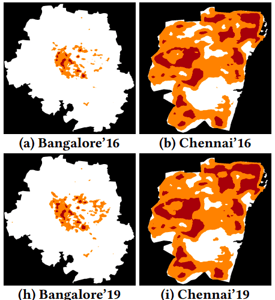
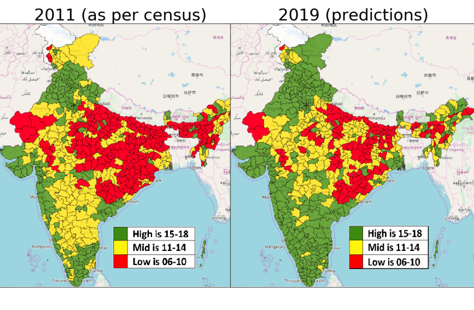

Specializing in scalable geospatial analysis and agricultural sustainability frameworks using Google Earth Engine.

A framework decomposing crop identity into six spatially invariant biophysical traits, enabling consistent mapping across diverse agro-ecological contexts.
Boosts accuracy for spectrally similar species and imbalanced classes.
Processed 32.8M raw records into usable training labels.
Technical Innovation: First-of-its-kind trait-based approach eliminating spatial overfitting for generalizable crop mapping.

A scalable framework featuring intra-annual taxonomy for cropping intensity and water seasonality detection using SAR/Optical data fusion.
Real-World Impact: Powers the CoRE Stack app, supporting 15+ CSOs across 800+ villages.

Shivani A Mehta, Chahat Bansal, Aaditeshwar Seth, et al. | ICTD 2024

Chahat Bansal, Aaditeshwar Seth, et al. | ACM SIGCAS 2021

Chahat Bansal, Aaditeshwar Seth, et al. | ACM SIGCAS 2020

Chahat Bansal, Aaditeshwar Seth, et al. | ACM IKDD CoDS 2020
2018 - Present
Advised by Prof. Aaditeshwar Seth | CGPA: 9/10 | UGC NET JRF
Teaching Assistant (2018-2022): Computer Networks, Design Practices, Adv. Computer Networks.
Jan 2018 - Jun 2018, Gurugram
Internship in full-stack web development and scalable technology infrastructure.
2015 - 2018 | CGPA: 90.7%
Specialization in Computer Applications.
2012 - 2015 | CGPA: 87.49%
Recipient of the "Gem of Keshav" Award; Co-founder Maniera Fine Arts Society.